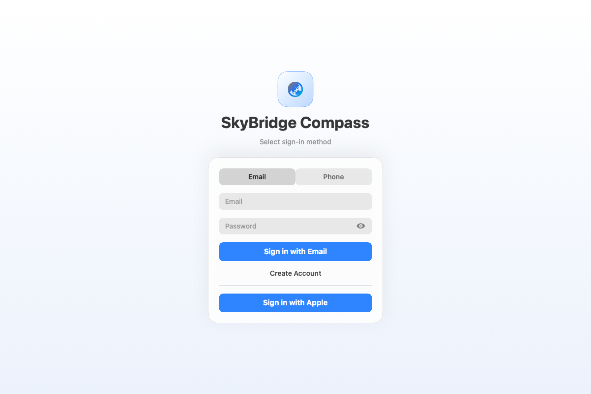
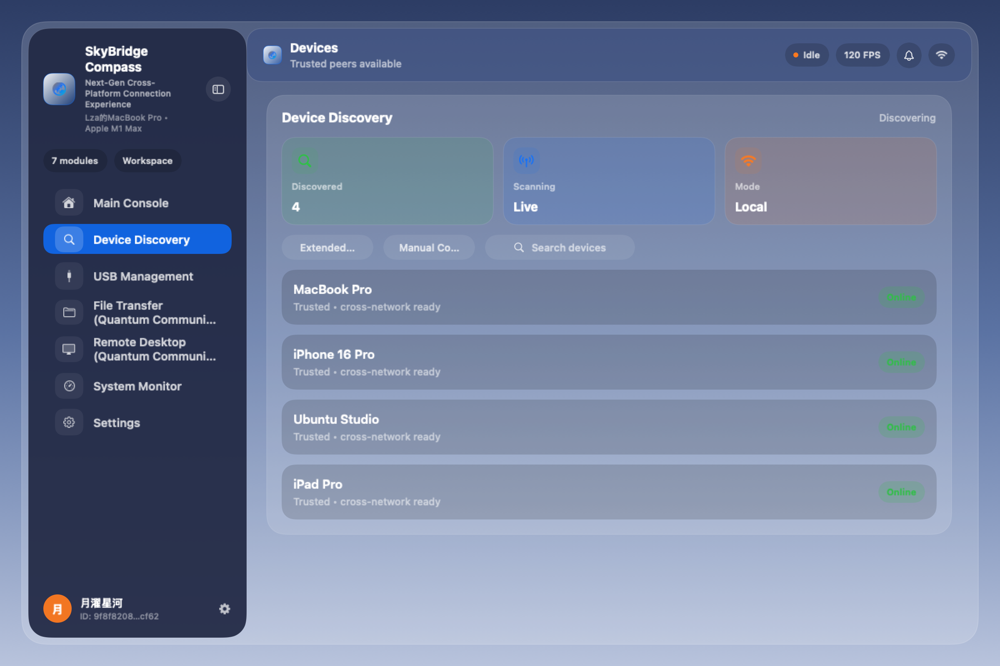
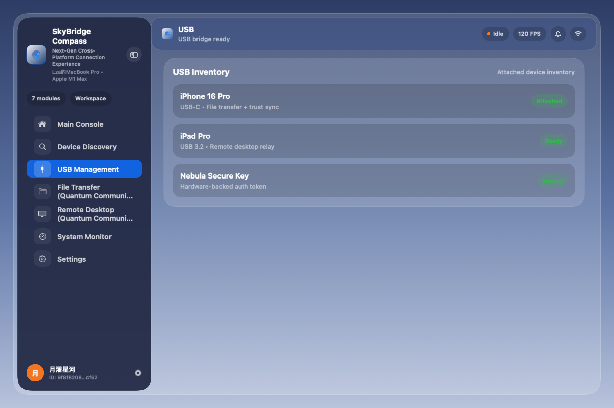
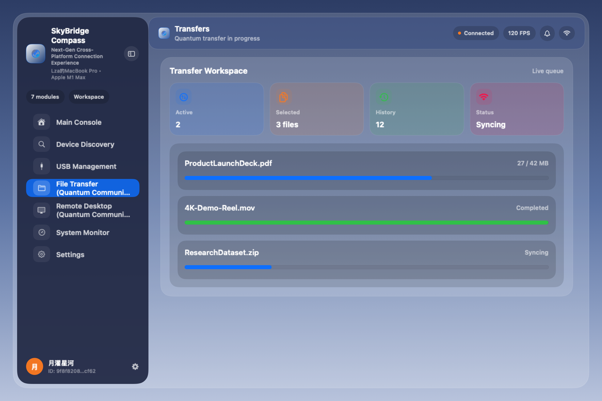
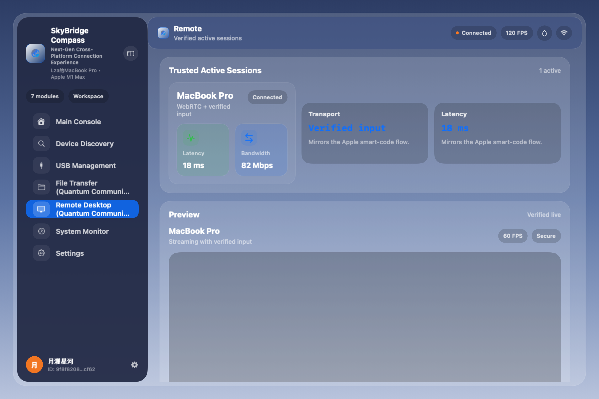
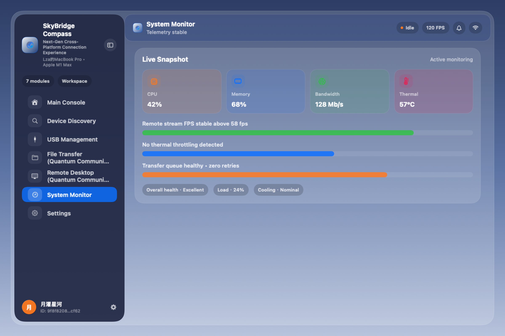
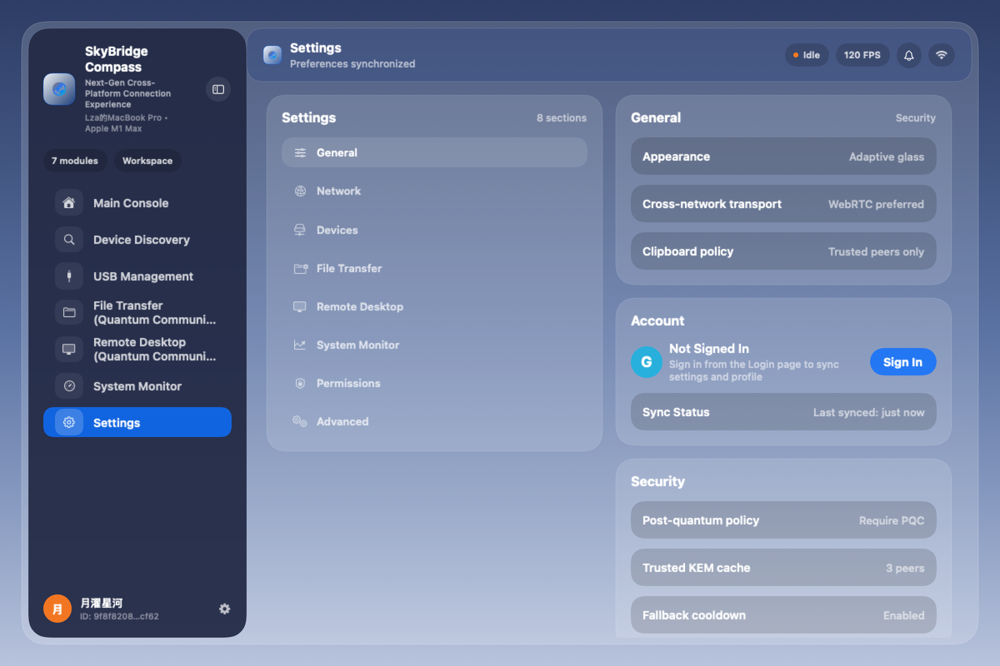
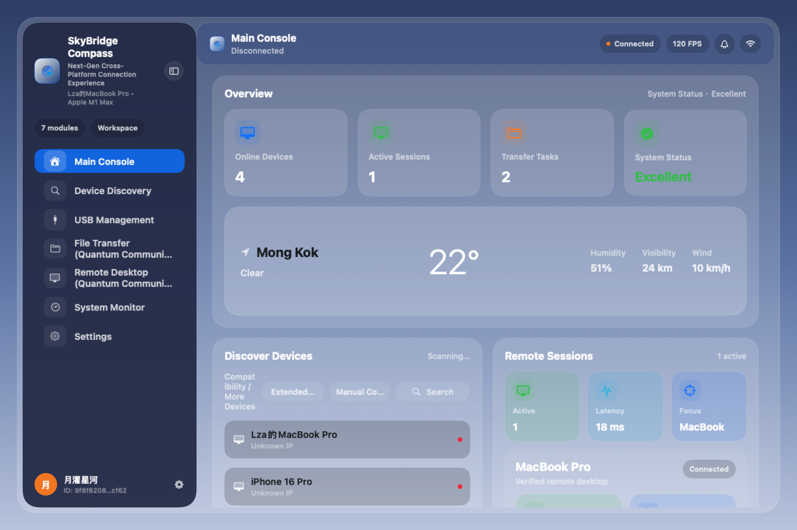

SkyBridge Compass UI Baseline Captures
Generated from MacUIBaselineCapture using the runtime manifest on March 9, 2026.







Generated from MacUIBaselineCapture using the runtime manifest on March 9, 2026.







